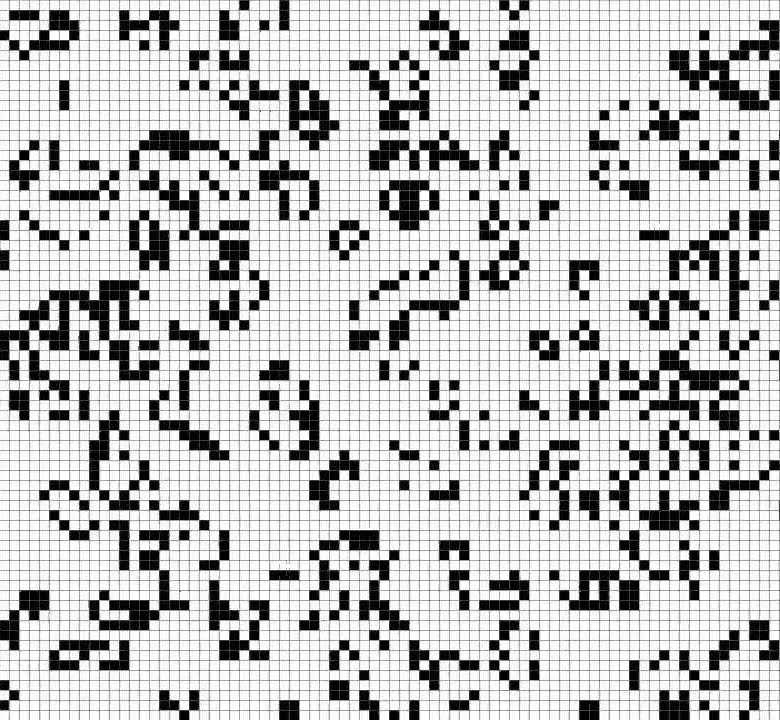
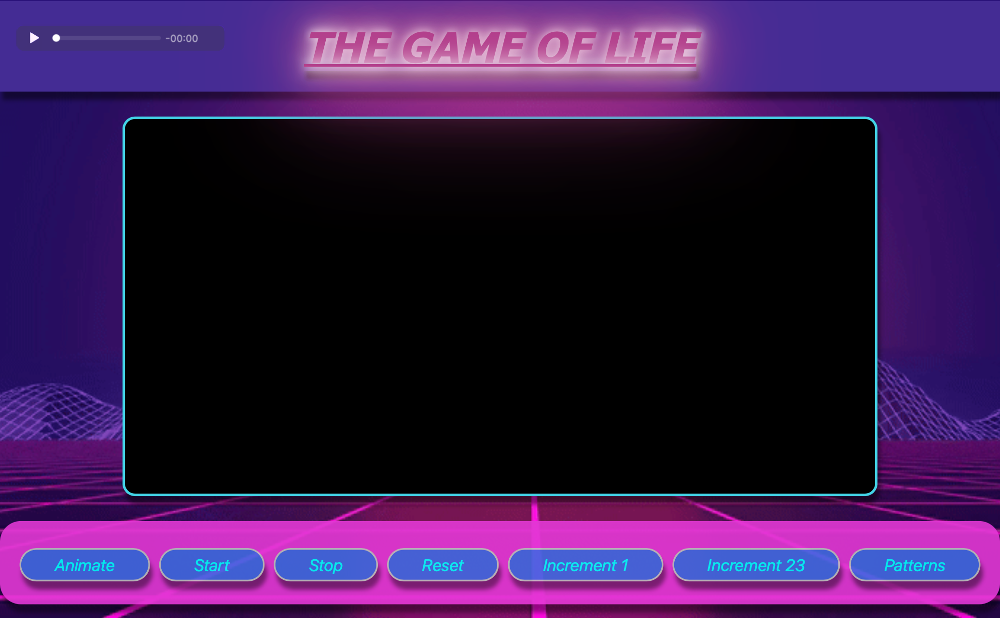

John Conway's Game of Life
To enhance my JavaScript, HTML, and CSS knowledge, I created John Conway's Game of Life. The Game of Life operates on a set of mathematical rules; live, die, or multiply. Depending on the conditions, various patterns can form throughout the course of the game.
My program allows the user to interact with the webpage by allowing the user to plant pixels onto the black screen. You can also utilize a multitude of preset patterns that are built into the website. The Game of Life also allows you to increment each step one by one or by twenty three steps at once.
The Rules for how The Game of Life operates
For a space that is 'populated':
Each cell with one or no neighbors dies, as if by solitude.
Each cell with four or more neighbors dies, as if by overpopulation.
Each cell with two or three neighbors survives.
For a space that is 'empty' or 'unpopulated'
Each cell with three neighbors becomes populated.